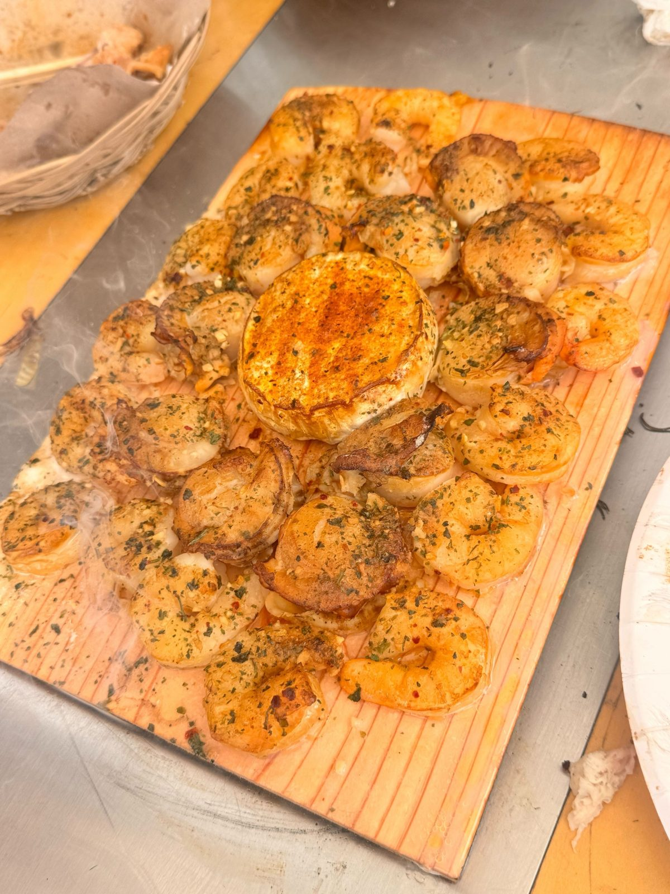
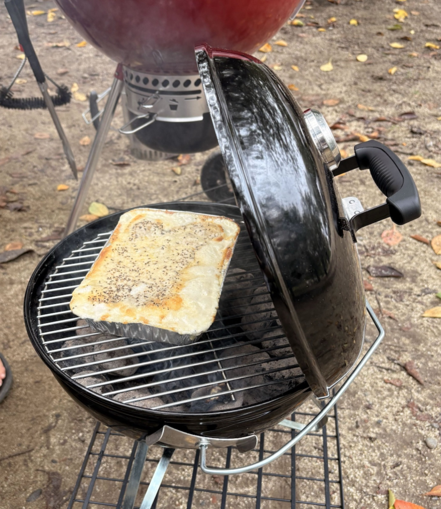

INVITATION
あのバーベキューの、
第2回をやります。
朝の光がいい時間に火を入れて、夕方までご一緒します。
2026年5月31日、新木場のHERO FIELDで、僕ら3人がホストになってバーベキューの会を開きました。ご参加いただいた皆さまに、ありがたいことにとても喜んでいただけた会でした。
その第2回を、10月18日（日）に木場公園で開きます。今回は、5月31日にご参加いただいた方から、その方の大切な方へ、「この体験を受け取ってほしい」と思う方をお一人かお二人、お誘いいただく形にしています。
このページは、そうしてお誘いいただいた方へのご招待状です。届いた方は、そのままお読みください。
はじめに
「バーベキュー」と聞くと、多くの方は、
薄切りの肉を網に乗せ、
いつのまにか焦げて、ナスがしおれて、
それでも楽しいねと笑い合う、
そんな光景を思い浮かべるかもしれません。
それはそれで、もちろん楽しい。ただ、料理そのものを味わう、味の細部にゆっくり降りていく、というような時間ではないように思います。
僕らがこの日にお見せしたい「バーベキュー」は、少しだけ別の体系に属しています。
蓋を閉めた炭のグリル。電気やガスも織り交ぜながら、焼く前に丁寧に下味をつけて、低温でゆっくり、じっくり、時間をかけて火を通していきます。
すると、肉も、魚も、野菜も、これまで自分が知っていたものとは、まるで別の食べ物のように、とてつもなく美味しくなる。
これを5年ほど続けてきたのが、あんちゃん（石原 杏莉）。そのバーベキューに山根と植田が出会い、強烈に感動したことをきっかけに、この3人で「YORON BBQ」という取り組みを続けています。
少し、山根と植田の個人的な話を。
山根・植田はこの40年、食べることが大好きで、さまざまな美味しいご飯を堪能させていただいてきました。
それでも、あんちゃんのバーベキューを口にしたときの感覚は、これまでの中でいちばん、というよりは、「美味しい」という言葉を超えた、幸せ、あるいはそれすら超えた何か、としか言いようのないものでした。気がつくと、いつもの自分とは少し違う世界に入っているような、そんな感覚すらありました。
日頃、仕事や趣味やさまざまな活動に、アグレッシブに向き合っている皆様。だからこそ、僕らがそうして受け取った体験を、一度ご一緒に受け取っていただきたいと思い、この場を開いています。
第1回は、文化度の高い素敵な皆さまと、朝の光がいい時間に火を入れて、夕方までゆっくりご一緒しました。今回は、その日にいらした方が「この人にも」と思う方に、輪を少しだけ広げます。
語りたいことはたくさんあるのですが、多くを語ってしまうと、皆さんがそこから何を感じ・何を持ち帰るかを、僕らの方で限定してしまうことになりそうなので、この招待状ではこのくらいの説明にとどめさせてください。
バーベキューならではのメニューをたくさん取り揃えてお待ちしています。ぜひ、お楽しみに。
どんな会だったかは、このページを送ってくださった方に直接聞いてみてください。それがいちばん正確な紹介だと思っています。
あんちゃん（石原 杏莉）／植田／山根
THE FIRE
朝10時に火を入れて、
11時には最初の一皿が焼き上がっています。
蓋を閉めた炭グリルで、低温のまま時間をかけて火を通していきます。焼き始めてから食べられるまでに時間がかかる進め方なので、運営が10時に入って火を起こし、みなさんが着く11時ごろには最初の一皿が仕上がっているように段取りしています。
これまでの会で焼いてきたものを、いくつか。




写真はこれまでの会の実物です。当日のメニューは仕入れや天候で変わるので、同じものが出るとは限らない、くらいに思っていてください。
一緒に焼きたい方は、焼き手側に回っていただけます。参加者どうしで下ごしらえを手分けする、野菜にオリーブオイルと塩コショウを振る、くらいのことですが、それも歓迎される会です。食べるだけでも、もちろん大丈夫です。
DETAILS
開催概要（第2回）
| 日時 | 2026年10月18日（日）11:00集合〜15:00ごろ 10時から運営が火を入れておくので、11時に来ればすぐ食べ始められます。途中参加・途中退出も歓迎です |
|---|---|
| 場所 | 都立 木場公園「バーベキュー広場」（江東区・南地区） 東京メトロ東西線「木場駅」1番出口から徒歩5分前後。第1回はHERO FIELD 新木場でした |
| ホスト | あんちゃん（石原 杏莉）／植田／山根 |
| 定員 | ゲスト10名（ホスト3名を含めて13名ほど） 先着で、超えた分はキャンセル待ちでお預かりします |
| 会費 | 7,000円前後を予定（施設利用料＋食材＋ソフトドリンク込み） |
| 持ち物 | 基本は手ぶらで大丈夫です。飲みたいお酒があればご持参ください（園内に飲み放題はありません）。一緒に焼きたい方は簡易的なエプロンがあると◎ |
| 服装 | 煙の匂いがついても気にならないもの グリルに過度に近寄らなければ大丈夫です |
| 雨天時 | 別途ご連絡します |
| ご返事 | 下の参加フォームから、または、このページをお送りくださった方に「参加したい」とお伝えください |
事前にお伺いしたいこと
当日のメニューはお肉類・魚介類などの予定です。苦手な食材・アレルギーがあれば、参加のご連絡の際にあわせてお知らせください。可能な範囲で配慮いたします。
当日は料理や場の様子を写真・動画で記録し、後日SNS等に掲載する可能性があります。顔出しNG・掲載NGのご希望も、遠慮なくどうぞ。
VENUE
会場とアクセス
| 集合場所 | 木場公園「バーベキュー広場」（南地区） 噴水広場の東どなり、レストランの手前です |
|---|---|
| 電車で | 東西線「木場駅」1番出口から徒歩5分前後。「木場口」から入ると広場がいちばん近いです |
| 車で | 「第一駐車場」へ。停めた場所から広場まで約50m 1時間400円・12時間まで最大1,600円。第二駐車場は反対側なのでご注意ください |
| 飲み物 | ソフトドリンクはこちらで用意します。お酒はお好きなものをご持参ください 園内に自販機、徒歩6分にコンビニがあります |
園内マップや駅からの道順は、木場公園の案内ページにまとめてあります。当日はこのページを見ながら来てください。
APPENDIX
もっと知りたい方へ
読まなくても、当日には何の支障もありません。
- YORON BBQ COMMUNITY（公式サイト） — コミュニティのトップページ
- はじめての方へ — 定義・5つの原則・歴史・目指す世界を1ページに
- 役割図鑑 — 火の輪の4つの役割。焼けなくても仲間になれます
- 3人の物語 — ホスト3人の出会いからYORON BBQ誕生まで
- ACADEMY（学ぶ） — 温度と道具の科学
- 月1BBQ — 531とは別の、どなたでも参加できるオープン開催
RSVP
下のフォームから、
ひとことだけお送りください。
「参加したい」。それだけで伝わります。集合場所や当日の細かなご案内は、開催が近づいたらメールでお送りします。ページをお送りくださった方に直接お伝えいただいても、もちろん大丈夫です。